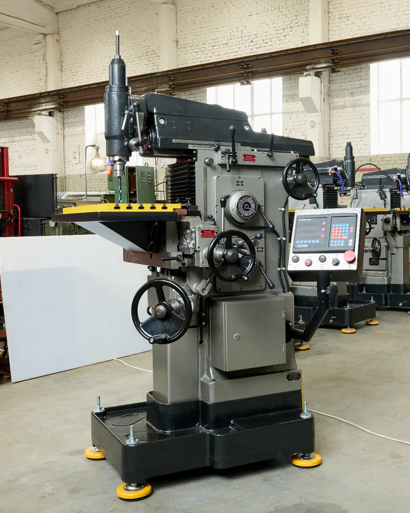
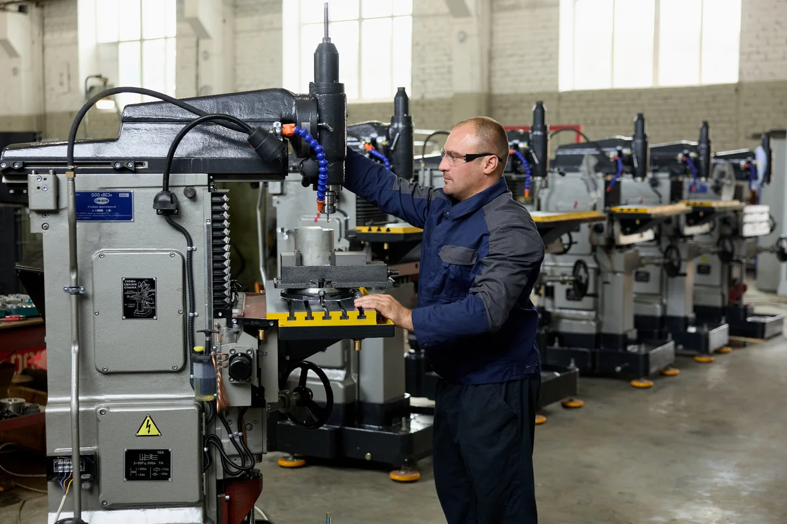
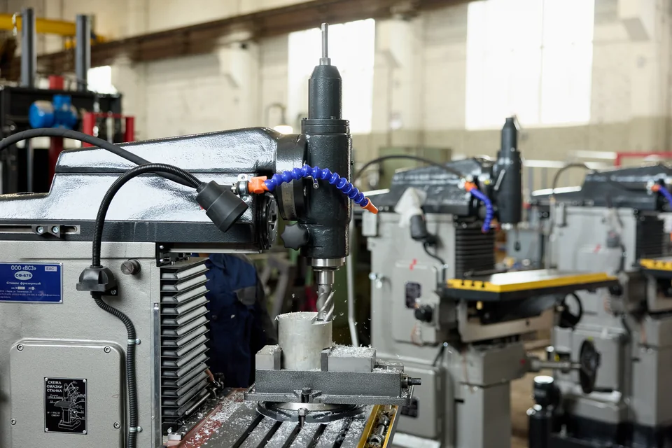
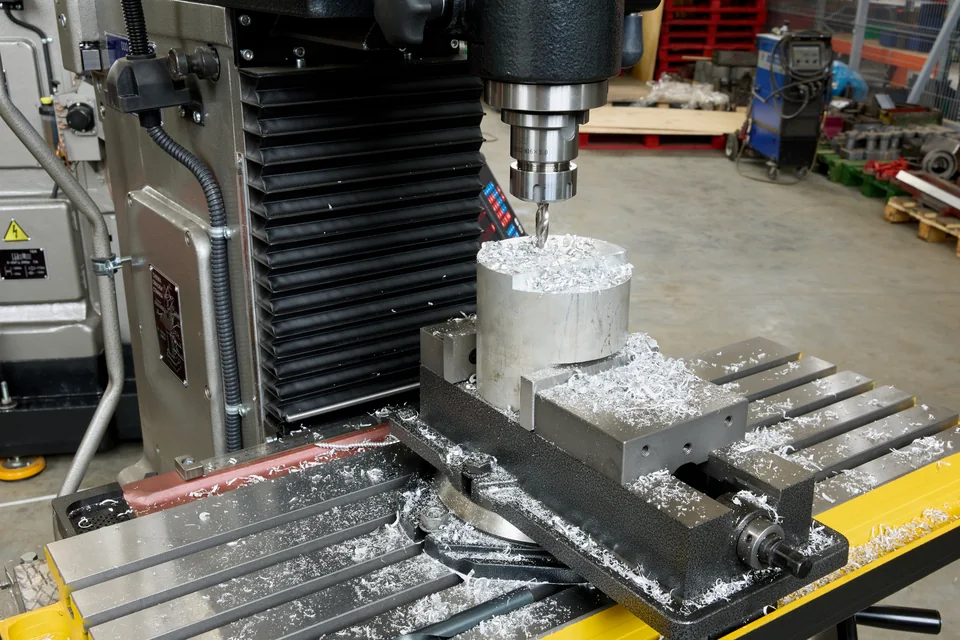
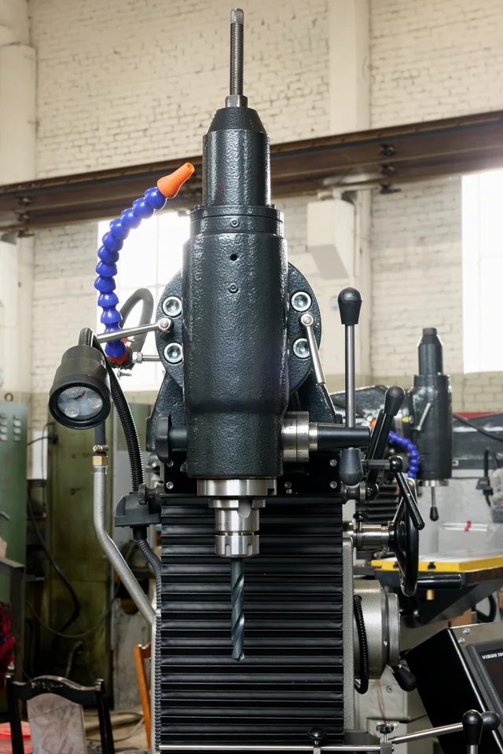
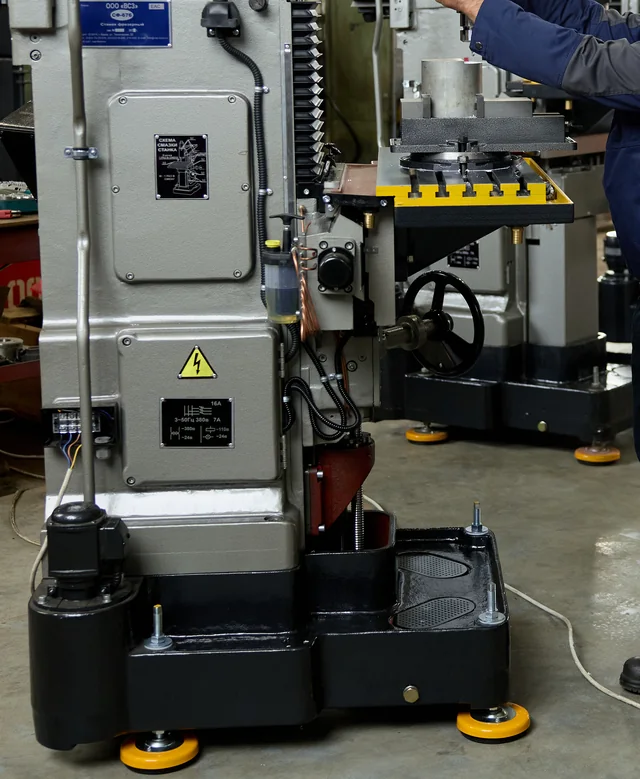
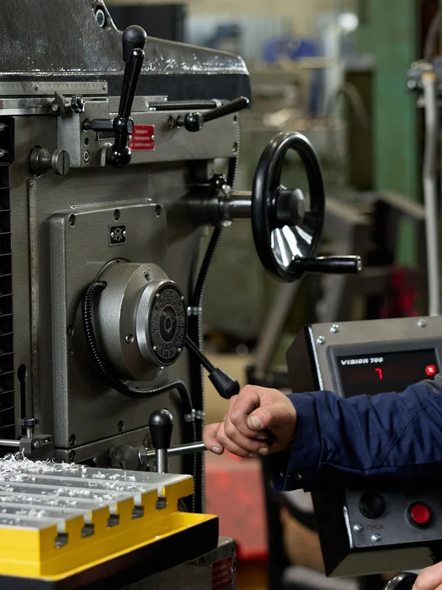
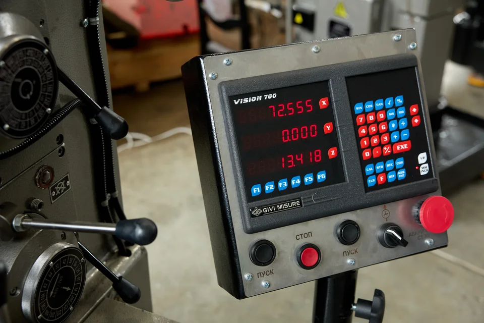
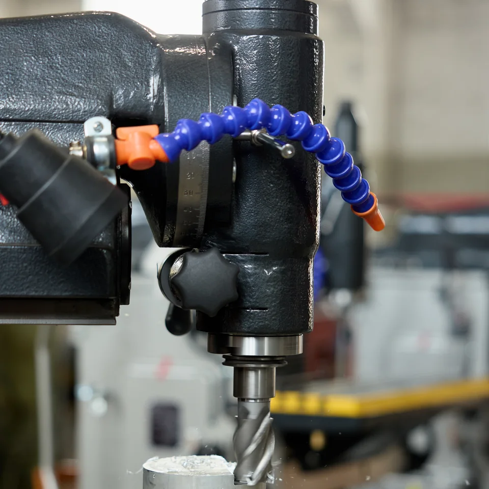
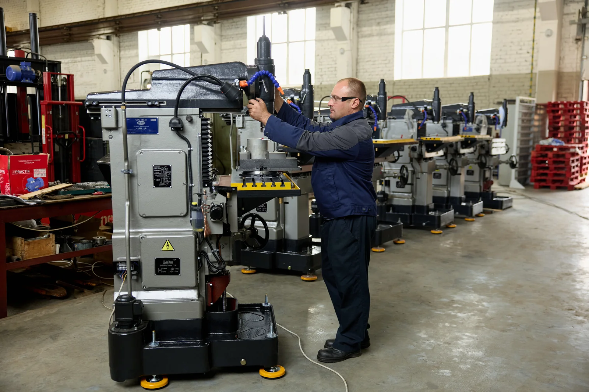

Два шпинделя
Горизонтальный и вертикальный — для разных фрезерных операций.
СФ676 на производственном участке ВСЗ


Широкоуниверсальный
Оснастка, ремонтные детали, опытные образцы и серийные партии — на одном станке
Условные схемы показывают принцип работы, а не точную конструкцию узлов.
Горизонтальный и вертикальный — для разных фрезерных операций.

Вертикальный и угловой горизонтальный — для разных технологических задач.
Дополнительная опция: универсальный угловой стол устанавливается вместо штатного горизонтального.
Обработка деталей при различных углах положения вертикального шпинделя.

Выполняются с помощью дополнительной долбёжной головки.
Условная система координат — не кинематическая схема станка.

| Параметр | Значение |
|---|---|
| Габариты (Д × Ш × В) | 1200 × 1240 × 1780 мм |
| Масса в стандартной комплектации | 1050 кг |
| Рабочая поверхность углового горизонтального стола | 250 × 800 мм или 300 × 800 мм |
| Рабочая поверхность вертикального стола | 250 × 630 мм |
| Перемещения по осям X / Y / Z | 450 / 300 / 380 мм |
| Ход пиноли вертикального шпинделя | 80 мм |
| Параметр | Значение |
|---|---|
| Конус шпинделей | 7:24 № 40 или Морзе 4 |
| Частота вращения шпинделя горизонтального / вертикального | 50–1630 / 63–2040 об/мин, 16 ступеней |
| Рабочие подачи / ускоренная | 13–395 / 935 мм/мин, 16 ступеней |
| Поворот вертикального шпинделя | ±90° |
| Наибольшее усилие резания | 550 кгс |
| Параметр | Значение |
|---|---|
| Мощность главного привода / насоса СОЖ | 3,0 / 0,12 кВт |
| Питание | 380 В, 3 фазы, 50 Гц |
| Класс точности по ГОСТ 8-82 | Н — основное исполнение, П — по запросу |
Фрезерование плоских и фасонных поверхностей · сверление · растачивание · цекование · центрование · резьбонарезание · долбление · разметка
В отделе продаж можно запросить полные характеристики, перечни стандартной и дополнительной комплектации, эскизы столов и шпинделей и руководство по эксплуатации.
Каждый СФ676 собирается под спецификацию заказчика. Согласуем пять параметров: стол, конус шпинделя, УЦИ, количество отображаемых координат и тип винтовой передачи. Коммерческое предложение с ценой и сроком пришлём на почту в течение одного рабочего дня. Без звонков, если вы их не просили.
Укажите стоимость оборудования из полученного коммерческого предложения — калькулятор покажет распределение суммы по этапам оплаты.
Рубли и копейки: запятая или точка, до двух знаков после неё. Допустимы пробелы между тысячами. Максимум — 1 000 000 000 ₽.
Сумма появится после ввода стоимости
Сумма появится после ввода стоимости
Сумма появится после ввода стоимости
Условия фиксируются в договоре.
Общая сумма: Сумма появится после ввода стоимости
Расчёт выполнен на основании стоимости, указанной вами. Он показывает распределение платежей и не является коммерческим предложением завода.
Калькулятор не рассчитывает доставку, разгрузку, страхование груза, командировочные расходы специалистов и стоимость дополнительной комплектации, если она не учтена в введённой сумме. НДС не выделяется и не пересчитывается.
Первые два платежа округляются до копейки, окончательный платёж — остаток общей суммы. Условия окончательного платежа фиксируются в договоре.
Проверка по заводскому номеру. Акт приёмки входит в комплект поставки вместе с руководством по эксплуатации и чертежами.
На заводе · до отгрузки
Проверка 28 параметров.
Обкатка на холостом ходу и под нагрузкой перед отгрузкой
Оформление результатов заводской приёмки.
После доставки · отдельный этап
Установка, выверка, обкатка и проверка паспортных данных после доставки.
Пусконаладочные работы у заказчика входят в стоимость станка. Объём проверок при ПНР меньше, чем при заводской приёмке: это отдельный этап, а не повторение всех 28 измерений. Командировочные расходы специалистов оплачиваются отдельно.
| Контролируемый параметр | Значение |
|---|---|
| Осевое биение шпинделей, горизонтального / вертикального | 15 / 10 мкм |
| Радиальное биение конической поверхности шпинделей | 10 / 10 мкм |
| Плоскостность рабочих поверхностей столов на длине 500 мм | 20 мкм |
| Взаимная перпендикулярность осей X, Y, Z | 20 мкм |
| Класс точности по ГОСТ 8-82 | Н — основное исполнение. П — по запросу, допуски по согласованной документации. |
28 параметров геометрической точности проверяются на каждом станке по его заводскому номеру. Акт приёмки входит в комплект поставки вместе с руководством по эксплуатации и чертежами. Это не заявление «станок точный» — это протокол с цифрами, который можно сверить при вводе в эксплуатацию.

Головка поворачивается на ±90° и не теряет жёсткости
Конструкция из двух цилиндров сохраняет жёсткость узла в любом положении. Поэтому на вертикальном шпинделе можно вести силовое фрезерование под углом, не разрушая корпус головки и не теряя стабильности обработки.
Два шпинделя — один станок вместо двух
Для долбления нужна дополнительная головка.
Дисковые, цилиндрические и фасонные фрезы — на горизонтальном шпинделе с хоботом и серьгой; концевые и торцевые — на вертикальном. Деталь не переустанавливается. Долбёжные операции — с дополнительной долбёжной головкой.

Литая станина 1050 кг гасит вибрации
Направляющие закрыты гофрированным кожухом от стружки и СОЖ. Отсюда чистота поверхности и сохранение геометрии на годы. При этом станок занимает 1,2 × 1,24 м и встаёт практически в любое помещение.

16 скоростей и 16 подач — режим под любой материал
Горизонтальный шпиндель 50–1630 об/мин, вертикальный 63–2040, подачи 13–395 мм/мин, ускоренная — 935. Сталь, чугун, алюминий или латунь — без компромиссов и лишнего вспомогательного времени.

УЦИ прямого отсчёта — люфт винта не попадает в размер
Линейки на осях показывают фактическое положение стола. Дискретность — 0,001 мм. Основное исполнение Ф3 отображает три координаты. Магнитная УЦИ — обычное исполнение, оптическая — только по специальному заказу. Можно установить позже, УЦИ любого производителя.

СОЖ, смазка и свет — меньше обслуживания
Подача СОЖ через модульно-шарнирную трубку прямо в зону резания. Двухконтурная смазка с маслостанцией на 8 дозаторов. Промышленное светодиодное освещение 24 В.
Если у вас уже стоит 676, 676П или ФУ-251 — вы знаете, что это хорошие станки; СФ676 продолжает ту же конструкцию. Вопрос не в том, какой станок лучше. Вопрос — во что обойдутся следующие два-три года: с тем, что есть, с восстановленным или с новым.
| Критерий | Оставить как есть | Капитально отремонтировать свой | Купить новый СФ676 |
|---|---|---|---|
| Затраты сейчас | Нет | ВСЗ согласовывает с заказчиком фиксированную цену капитального ремонта для конкретного объёма работ. В него могут входить разборка, шабрение направляющих, ремонт шпиндельного узла, коробок и электрики. При ремонте отдельного узла стоимость зависит от его состояния, необходимых работ и запчастей. | Цена комплектации по КП |
| Затраты в ближайшие годы | Неизвестны: ремонт по факту поломки, поиск деталей, простой | Гарантия ВСЗ на капитально отремонтированный станок — 12 месяцев. При ремонте отдельных узлов гарантия распространяется на согласованный объём выполненных работ. Ресурс узлов, которые не ремонтировали, остаётся прежним. | Плановое обслуживание по РЭ; гарантия 12 месяцев |
| Время до рабочего станка | Работает — пока работает | По предложениям сторонних сервисных компаний капитальный ремонт 676 занимает около 70 дней плюс ожидание узлов. | Изготовление от 20 рабочих дней + доставка + пусконаладка |
| Что известно о состоянии | Только то, что видно снаружи | Известно после разборки и составления дефектной ведомости. | Акт приёмки по заводскому номеру: 28 параметров геометрии |
| Комплектность | Как есть | Недостающие узлы (головка, хобот, серьга) — искать отдельно | Зафиксирована в спецификации договора |
| Запасные части | Продаются, в том числе крупные узлы, — но цена по запросу, часть позиций б/у, редкие приходится искать или изготавливать | То же | Завод-производитель; чертежи быстроизнашивающихся деталей в РЭ |
| Простой при поломке | Полный, на неопределённый срок | Меньше вероятность, но тот же поиск деталей | Гарантия и сервис производителя |
| Закупка по 44-ФЗ / 223-ФЗ | — | Ремонт закупается отдельной процедурой | Для выбранного исполнения запросите реквизиты записи Минпромторга |
В открытых предложениях за сентябрь 2026 года сторонние сервисы указывали выездную диагностику от 25 000 ₽ и ремонт станков соседнего класса за 650–770 тыс. ₽. В тот же период продавцы просили за подержанные рабочие 676П 165–220 тыс. ₽, за ФУ-251 — 280–450 тыс. ₽, за СФ676 1979 года — 200 тыс. ₽.
Если у вас есть полгода, комплектный станок и специалист с опытом ремонта 676, восстановление может оказаться выгодным. Если детали нужны в этом квартале, сопоставьте возможный простой на время ремонта со сроком изготовления, доставки и запуска нового СФ676.
Для оценки ремонта можно указать данные станка и описать его состояние. Фото шильдика, видео шпинделя и сведения о люфтах можно передать специалисту при дальнейшем общении. Условия подготовки расчёта уточняются.
Посчитать для моего станкаВыберите параметры самостоятельно или расскажите о производственной задаче — поможем подготовить требования к станку.
Обозначение модификации СФ676 определяется выбранной комплектацией. Согласуйте пять параметров для спецификации к договору. Или оставьте это нашему технологу: подберём по вашей маршрутной карте.
Комплектация определяется по техническому заданию заказчика. Состав оборудования и дополнительных принадлежностей фиксируется в коммерческом предложении и договоре. Монтаж и пусконаладка входят в стоимость станка; командировочные расходы специалистов, доставка, разгрузка и страхование оплачиваются отдельно. Условия сопутствующих услуг прописываются в договоре.
Дополнительная оснастка: глобусный стол — установка детали в трёх плоскостях · универсальная делительная головка — шестерни, фланцы, деление на градусы · круглый поворотный стол · тиски до 125 мм · дополнительное освещение
Подобрать комплектацию с технологомДесять шагов от заявки до первой детали — и кто отвечает за каждый.
Вы описываете задачу, мы присылаем КП с обозначением модификации в течение одного рабочего дня.
Фиксируем обозначение, комплект, срок и условия. Что написано в спецификации — то и придёт.
Сборка на заводе в Кирове. Срок — от 20 рабочих дней.
28 параметров геометрии, обкатка, акт приёмки. Можете приехать и принять станок лично. Входит в стоимость станка.
Консервация на 1 год, деревянный ящик, крепление на салазках.
По России любым транспортом, от 3 дней. Доставка, разгрузка и страхование груза оплачиваются отдельно.
Установка на виброопоры при соблюдении требований к основанию или на фундамент по чертежу из РЭ; 380 В, 3 фазы; кран или погрузчик от 3 т для ящика; для точных работ — помещение +20 ± 2 °C, не рядом с абразивными станками.
Установка, выверка по уровню 0,04 мм на 1000 мм, расконсервация, заправка смазкой, обкатка, проверка паспортных данных. Монтаж, выверка, обкатка и пусконаладочные работы входят в стоимость станка.
Инструктаж и обучение оператора и механика по органам управления, смазке и обслуживанию входят в стоимость станка.
Гарантия 12 месяцев. После — постгарантийное обслуживание, запасные части с завода, чертежи быстроизнашивающихся деталей в РЭ.
Монтаж, пусконаладка и инструктаж входят в стоимость станка. Командировочные расходы специалистов оплачиваются заказчиком отдельно.
Приёмка с вашим участием; дата согласуется за неделю.
Для подготовки закупки СФ676 здесь собраны коды продукции и обозначение технических условий. Документы для выбранного исполнения и коммерческое предложение можно запросить у отдела продаж.
Поможем подготовить техническое задание на закупку СФ676 по 44-ФЗ или 223-ФЗ. Укажите тип закупки и нужные документы в форме запроса.
Завод выпускает СФ676 в Кирове с 2016 года. Кроме СФ676 выпускаем настольно-сверлильный станок 2М112, точильно-шлифовальные станки ТШ и гидравлический пресс ПГП-50; оказываем услуги лазерной резки и электролаборатории.
Станки СФ676 поставлялись в 73 региона России и 17 городов шести зарубежных стран.
Точки в России условно размещены в административных центрах регионов поставки и не обозначают точные адреса покупателей.

Пришлём КП с обозначением модификации, ценой, сроком изготовления и стоимостью доставки в ваш город.
Получить расчёт с доставкойДемонстрационная версия. Отправка заявки пока не подключена. Для обращения позвоните или напишите в отдел продаж.
бесплатно по России
Ответим в течение одного рабочего дня.
Багин Николай
Отдел продаж
Киров, ул. Техническая, 22.
Номер сноски ведёт к вопросу в списке. Ссылки рядом с вопросом открывают соответствующие места на странице.